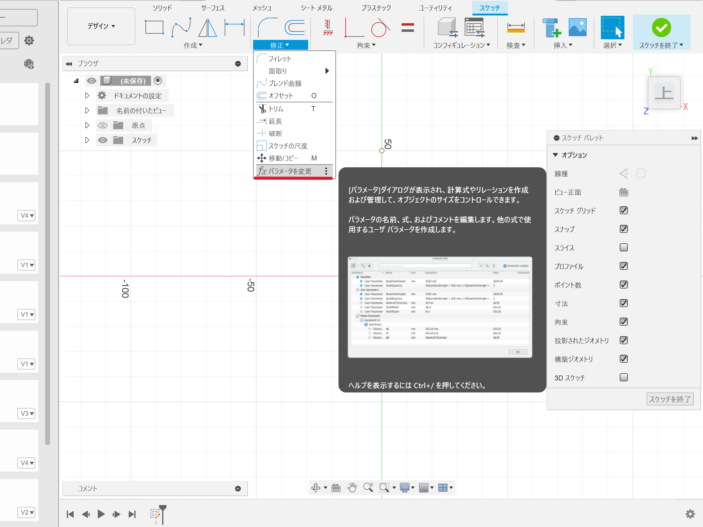
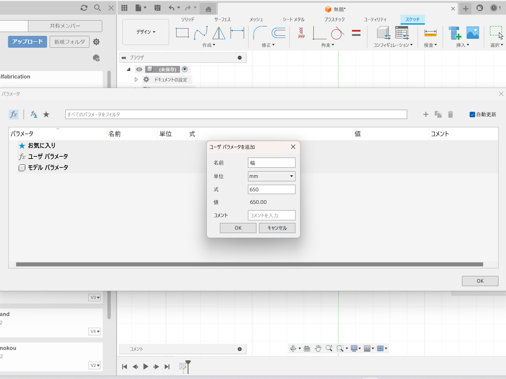
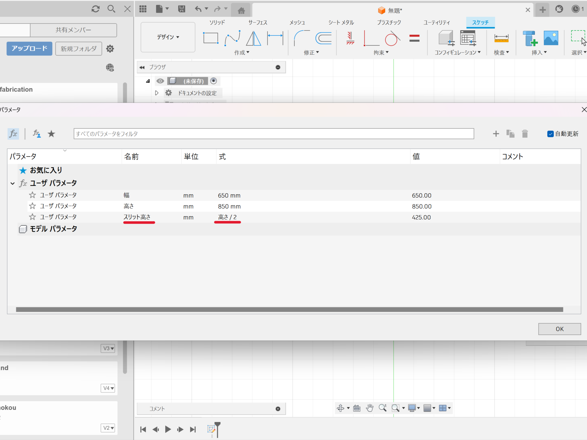
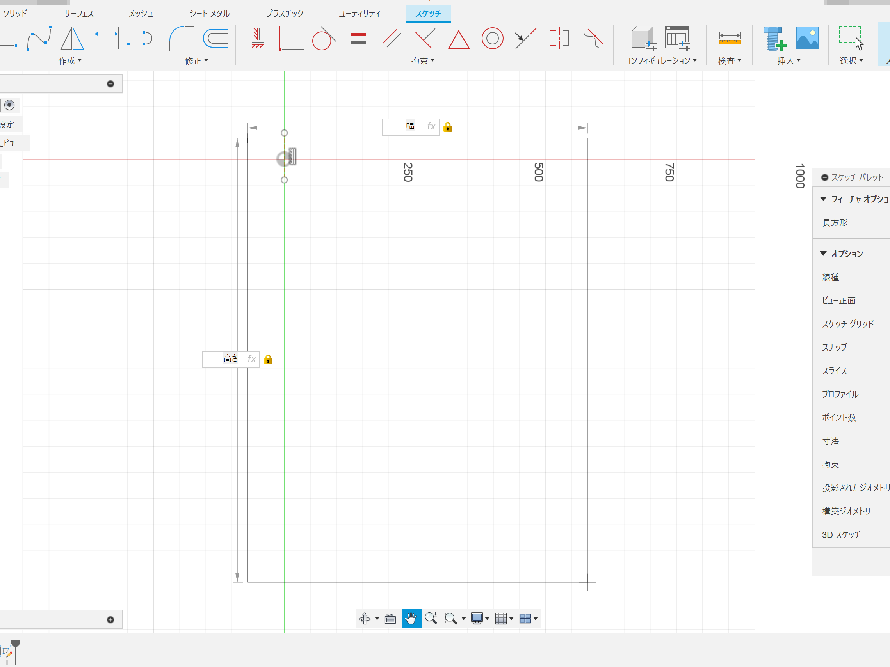
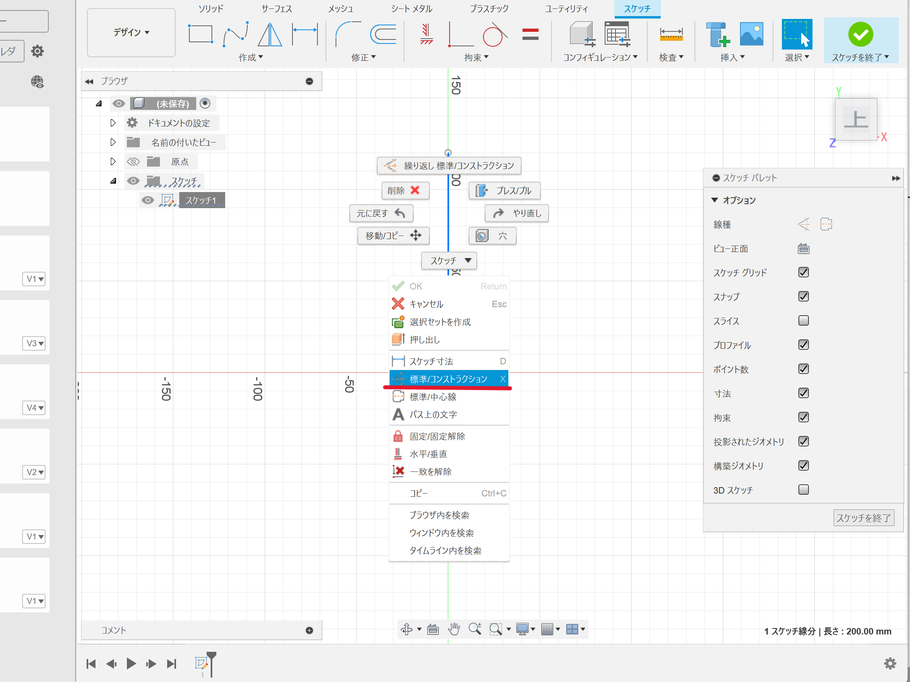
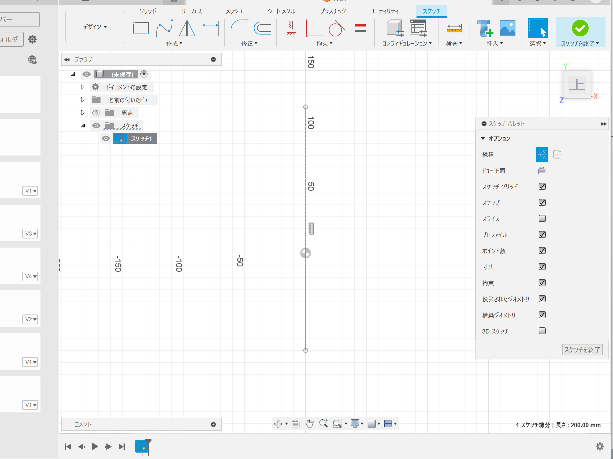
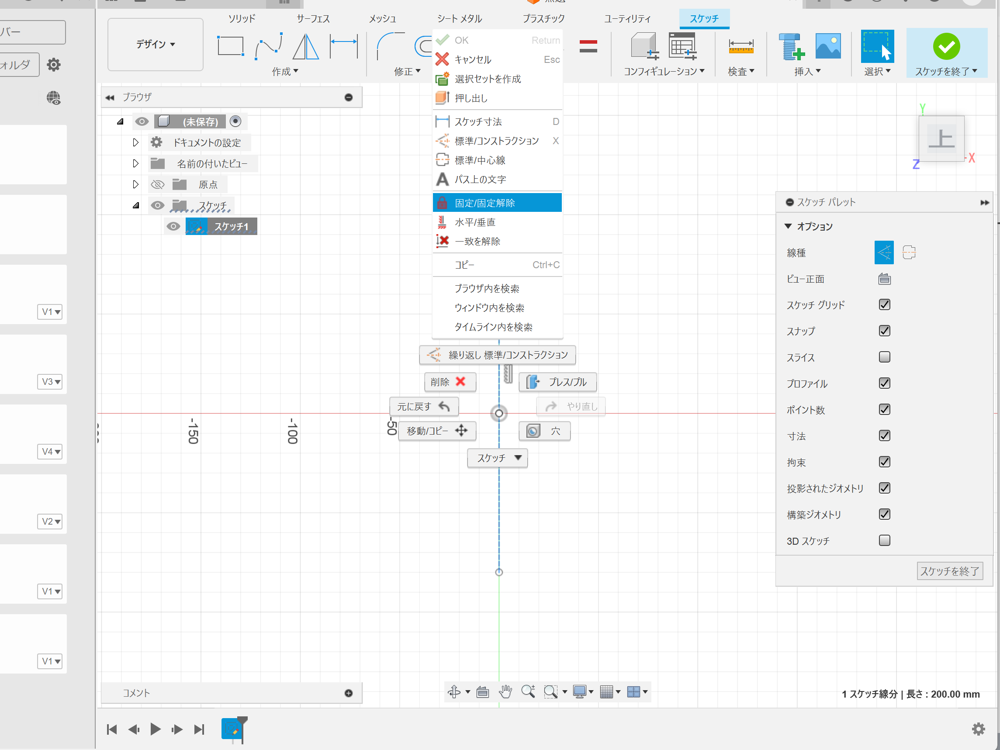

設計
背もたれパーツ設計の流れ
１．パラメータを作成
このパラメータという機能は、複数人で設計を行う場合や、高さや幅など何度も使用する決まった寸法がある場合に非常に便利な機能です。
パラメータは、修正タブの「パラメータを変更」から設定することができます。

右上の＋マークからパラメータを追加します。


POINT
・パラメータ名はわかりやすく
パラメータは使用する際にパラメータ名を入力するので、できるだけわかりやすく間違えないような名前にするのがポイント。
特に、同じプロジェクトを複数人で作業する場合には、パラメータがすべて共有されるので注意が必要です。
・式で表せる数値はなるべく式にする
スリットの高さや位置など、高さや幅を基準に設定するものは、直接数値を入れるのではなく、高さや幅を使った式を入力するのがポイント。
入力ミスを防ぐのはもちろん、後から高さや幅を変更したときに、自動で他のパラメータも変更させることができます。
↓のようにスケッチで図形を描く際に、パラメータ名を入力することで設定した式が自動で反映されます。

２．補助線を引く
スケッチを開始し、線分を選択したら補助線を引きたいところに線を引きます。
（線を引いたらスケッチを終了せず、右クリック→OKを押す）
引いた線を選択した上で、右クリック→「標準/コンストラクション」を選択します。

先ほど引いた線が
実線から点線 に変わりました。

次に、作業中線が動かないように固定します。（線を選択して右クリック）

（更新途中...）
アセンブル